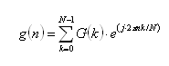

DSP_IFFT
This API computes the inverse FFT of a specified array.
This API is defined in the header file /opt/hp93000/soc/prod_com/include/MAPI/libdsp.h.
Syntax
DSP_IFFT(ARRAY_COMPLEX& src, ARRAY_COMPLEX& result); DSP_IFFT(COMPLEX *src, COMPLEX *result, INT size);
I/O |
Parameter |
Description / Range |
|---|---|---|
I |
src |
Source array |
O |
result |
Computed results |
I |
size |
Number of elements to be processed 8 ≤ size ≤ 2097152 size ≤ (size of src) size can be any integer in the above range. |
Important Points
- The
DSP_IFFTAPI transforms the src data to the result data by performing the inverse Fourier transformation calculus as shown in the following transformation equation:
where
- g(n) : 0 ≤ n ≤ N - 1
- G(k) : 0 ≤ k ≤ N - 1
- Typically, src contains frequency-domain spectrum data, which this function transforms into the corresponding time-domain data, and returns to result.
- The src elements with the subscripts greater than
size/2 represent negative frequencies.
If real numbers are expected as the result of the transformation, each negative frequency element in src must be the COMPLEX conjugate of the corresponding positive frequency element, that is, real parts must be the same value and same sign and imaginary parts must be same value but opposite sign.
- src and result can be the same array.
Example
COMPLEX array2[512], time_array[512]; . . DSP_IFFT(array2, time_array, 512);
In
this example, COMPLEX array array2 must contain the
frequency-domain components as follows:
array2
[0].real: |
Real part of DC component |
[0].imag: |
Imaginary part of DC component |
[1].real: |
Cosine component of frequency bin 1 |
[1].imag: |
Sine component of frequency bin 1 |
. |
. |
. |
. |
[255].real: |
Cosine component of frequency bin 255 |
[255].imag: |
Sine component of frequency bin 255 |
[256].real: |
Cosine component of frequency bin 256 |
[256].imag: |
Sine component of frequency bin 256 |
[257].real: |
Cosine component of negative frequency bin 255 |
[257].imag: |
Sine component of negative frequency bin 255 |
. |
. |
. |
. |
[511].real: |
Cosine component of negative frequency bin 1 |
[511].imag: |
Sine component of negative frequency bin 1 |
The function converts these elements to the corresponding time-domain data, and
returns this data to the array time_array.
Functional changes
- Introduced before SmarTest 6.3.2
- SmarTest 6.5.3: The size parameter is not restricted to the power of two.